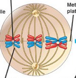

impQs
non-diszjunkció
- az utódsejt genetikailag nem azonos a kiindulási sejttel
- oka ➜ szabályozási és/vagy az ellenőrzési rendszer hibája példák:
- ha a kromoszómák szétválnak poliploidia = kromoszómaszám megnő
- ha a kromoszómák nem válnak szét politén = óriás kromoszómák
- a citoplazma szétválás elmarad ➜ sokmagvú óriássejt lesz
- nem feltétel kóros ➜ ilyen pl. megakaryocyta, osteoclast, chondroclast, hcs.izom stb.
- tumorban gyakoriak
- a centroszómák megkettőződése és/vagy szétválása nem szabályosan történik
- így NEM bipoláris osztódás lesz, hanem:
- pl. tripoláris (kép) (3centroszóma (ez a hiba) így 3irányba megy) ➜ 3sejt lesz
- pl. tetrapoláris (4centroszóma (ez a hiba) így 4irányba megy) ➜ 4sejt lesz ➜ aneuploid sejt a következménye
- hídképződés ➜ egyiket mindkét oldalról húzza 'mikrotubulus, így középen marad, majd eltörik a kromoszóma: mikronukleusz lesz

- non-diszjunkció
- lényege ➜ egyik kromoszómához nem kapcsolódnak 'mikrotubulusok
- következménye ➜ aneuploid sejt

- típusai ➜ mitotikus / meiotikus
- miotikus ➜ súlyossága attól függ mikor és milyen sejttípus osztódásakor következtek be: korai esetében sok sejtet fog érinteni, így súlyosabb következményekkel jár mozaicizmus
- meiotikus ➜ mely osztódáskor következik be:
- Meiózis I esetében ➜ 2triszómia + 2monoszómia!
- Meiózis II esetében ➜ 1triszómia + 1monoszómia + 2normál! ➜ anyákban életkorral nő a Down-kór kockázata /kék/
endomitózis
-
magmembrán nem bomlik le osztódás során, ezért...
nincs citokinezis
multipoláris osztódás


mitotikus orsó hibái


sejtciklus fázisai - kromoszóma,kromatida,DNS szám (mitózis vs meiózis)
- 1kromatid = 1DNS
- mivel diploid, ezért 23pár kromoszóma van
- azért pár, mert van egy apai meg egy anyai eredetű ➜ homológ kromoszómapárok
- 1kromoszóma állhat 1db vagy 2db kromatidból ➜ G1-ben még csak 1db-ból
- 2db 2kromatidás kromoszóma (melyek homológok) egymás mellé állva tetrádot alkotnak (ezért lesz crossing-over)
- interfázisban persze a kromoszómák kromatin formában vannak, de a számuk ettől még ennyi
- kromoszómaszám jelölésénél jobb-alsó index azt mutatja, hogy hány kromatidból áll!
1DNS mi?
kiinduló helyzetben (G1) miért annyi DNS-e van?
P1-ben(meiózis) mi történik?
| MITÓZIS | G1 | S | G2 | P | M | A | T |
|---|---|---|---|---|---|---|---|
| DNS | 46 | 92 | 92 | 92 | 92 | 46 & 46 | 46 |
| kromoszóma | 461 | 462 | 462 | 462 | 462 | 461 & 461 | 461 |
| MEIÓZIS | G1 | S | G2 | P1 | M1 | A1 | T1 | P2 | M2 | A2 | T2 |
|---|---|---|---|---|---|---|---|---|---|---|---|
| DNS | 46 | 92 | 92 | 92 | 92 | 46 & 46 | 46 | 46 | 46 | 23 & 23 | 23 |
| kromoszóma | 461 | 462 | 462 | 234 | 234 | 232 & 232 | 232 | 232 | 232 | 231 & 231 | 231 |

aneuploid sejt
-
aneuploid sejt ➜ kromoszómaszám nem 23 egész számű többszöröse (példákat lásd a továbiakban)
- nulliszómia ➜ valamelyikből egyáltalán nincs (2n-2)
- monoszómia ➜ valamelyikből egy van (2n-1) ➜ ilyen a Turner-szindróma(45,X)
- diszómia ➜ valamelyikből mindkettő egy szülőtől származik (UPD)
- triszómia ➜ valamelyikből +1 van ➜ Down-(47,XX+21) Patau-(47,XX+13) Edwards-szindróma(47,XX+18) Klinefelter-szindróma(47,XXY) Triplo X (47,XXX) szuperférfi (47,XYY)
- XX helyett lehet XY is néhol
- képek diákon, fel kell őket tudni ismerni és leírni a rövidítését
- tetraszómia ➜ valamelyikből +2 van csak az van bekeretezve(elnevezve), mely élveszületéssel járhat
meiózis
- két egymást követő osztódásból áll, köztük nincs S fázis
- 1.osztódásnál homológ kromoszómapárok válnak szét
- 2.osztódásnál testvérkromatidák válnak szét
- prophase 1-ben történik a homológ rekombináció:
- homológ kromoszómák párba állnak - tetrádot alkotnak - ➜ a párba állást egy ún. szinaptonémás komplex végzi
- ezután jön a crossing-over ➜
- random kromatidaterületek kicserélődnek egymásal
- 1pár kromoszómát tekintve 1-3db crossing-overrel lehet számolni
- itt figyelhetők meg a kiazmák ➜ crossing-over területén összekapcsolódott kromoszómák
- a 2.osztódás megegyezik mitózissal
Burkitt lymphoma
- t(8;14)
- reciprok transzlokáció ➜ kiegyensúlyoatlan
- ez a MYC onkogén aktivácioját okozza
- B-sejtek genomjában történik, így immortalizálódnak
Philadelphia-kromoszóma
- t(9,22)
- reciprok transzlokáció ➜ kiegyensúlyoatlan
- bcr & abl gének fúzionálnak, így létrejön a bcr-abl onkogén
- begegségek ➜ AML & CLL
anticipáció
- a betegség egyre hamarabb egyre súlyosabban jelentkezik a generációk során ➜ pl Huntington chorea, fragilis X szindróma
- oka ➜ a trinukleotid repeat mutációk expanziója
Huntington-chorea
- trinukleotid repeat mutáció
- megfigyelhető
- eltérő expresszió ➜ az idősödéssel nő a súlyossága (CAG triplet felszoporodása egyre nő)
- anticipáció
trinukleotid repeat mutációk
-
ezek a gén kódoló területén vannak
- poliglutamin betegségek ➜ CAG triplet felszaporodása ➜ pl. Huntington-kór
- polialanin betegségek ➜ CGN triplet felszaporodása ➜ fejlődési rendellenességhez vezet, pl. polidaktilia(sokujjúság) ezek az UTR (untranslated region) területen vannak:
- miotóniás izomdisztrófia
- fragilis X-szindróma
- repeatmutációk jellemzője, hogy csak bizonyos ismétlődési szám felett betegségokozók
- megfigyelhető náluk az anticipáció
- a repeatek száma generációról generációra változik, az a repeatmutáció nem stabil, ezért ezeket újabban dinamikus mutációknak is nevezik /igazságügyben a személyazonosításnál ezeket használják fel/

penetrancia
- penetrencia = érintett / obligát hordozók ➜ képen pl. 4/5 = 80%
- ez azt mutatja meg, hogy azonos genotípusú egyedek csoportjában az egyedek hány százaléka mutatja a genotípusra jellemző fenotípust
- ha a megegyező genotípusú egyedek mindegyikében megjelenik az adott fenotípus, akkor a gén teljes penetranciájú (penetrancia 100%), ha csak az egyedek egy részén látszik a fenotípus, akkor a gén penetranciája nem teljes
- komplett penetrancia = 100%
- inkomplett penetrancia < 100%
- megfigyelhető pl. polidaktilia(sokujjúság), osteogenesis imperfecta
- tehát ha van egy autoszomális domináns betegség, az attól nem feltétlen fog megjelenni heterozigóta esetében sem
- obligát hordozó
- ha beteg
- ha nem beteg, de legalább az egyik szülője beteg, és az utódjai közt is van beteg

komplex heterozigótaság
- recesszíven öröklődő betegségeknél
- különböző mutációt hordozó alléljait örökli a szülőktől az utód, miáltal az „aa” genotípus, helyesebben az „a1a2” genotípussal írható le
- a két allél nem egyformán súlyosan érintett => a betegségben szenvedő egyedek között a betegség súlyossága tekintetében eltérés jelentkezhet
genetikai heterogenitás
- lókusz heterogenitás ➜ több eltérő gén mutációja hasonló fenotípust hoz létre, pl.
- pl. familiáris hiperkoleszterinémia
- pl. albinizmus
- pl. xeroderma pigmentosum
- pl. CAH
- pl. retinitis pigmentosa, siketség, polydactilya(sokujjúság)
- allél heterogenitás ➜ 1 gén különböző mutáns alléljai hasonló vagy eltérő kórképeket hoznak létre
- eltérő ➜ FGF-R3 mutáció
- hasonló ➜ cisztás fibrózis
- Duchenne-féle izomdisztrófia, Becker-féle izomdisztrófia
pleiotrópia
-
egy adott gén mutációja többféle tünethez(több szervezt érint) vezet, pl.
- Marfan-szindróma, osteogenesis imperfecta
- achondroplasia
- enzimopátiák ➜ fenilketonuria, albinizmus
multiplex allélizmus
- 1 génnek 3 vagy több allélja van
- pl: AB0, Marfan-szindróma, familiáris hiperkoleszterinémia
struktúrgéneket érintő betegségek (AD)
- autoszomális domináns betegségek
- mivel struktúrgének mutációja áll a háttérben, ezért ezeknél megfigyelhető a pleiotrópia Marfan-szindróma
- oka ➜ fibrillin-1 gén mutáció (struktúrgén)
- megfigyelhető
- eltérő expresszió
- multiplex allélizmus
- tünetek:
- vázrendszeri eltérések (magas, sovány termet, hosszú ujjak, hyperflexibilitás)
- cardiovascular eltérések (aorta aneurizma, mitrális billentyű elégtelenség)
- oka ➜ kollagén I gén mutáció (struktúrgén) ➜ az EC-ben a legnagyobb arányban előforduló fehérje!
- megfigyelhető
- eltérő expresszió ➜ homozigótákban akár már születéskor letális (csontok nagyfokú törékenysége)
- inkomplett penetrancia
- tünetek:
- csonttörés
- kék sclera
- süketség
expresszivitás
- fenotípus kifejeződésének mértéke (pl. betegség súlyossága)
- eltérő expresszivitás megfigyelhető egyes betegségeknél
- pl. Marfan-szindróma, osteogenesis imperfecta
- pl. Huntington-chorea
- az idősödéssel nő a súlyossága (CAG triplet felszoporodása egyre nő)
- továbbá az anticipáció is megfigyelehtő
receptor & jelátvitel betegségek (AD)
- autoszomális domináns betegségek
- homozigóta formában letális
- oka ➜ FGF-R3 mutáció
- a gén mutációihoz valójában három öröklődő betegség is köthető – az achondroplasia, a hypochondroplasia és a tanatophoroplasia – aszerint, hogy a gén mely részén történt a mutáció
- itt tehát allélheterogenitás figyelhető meg
- pleiotrópia ➜ manifesztálódás aszerint, hogy a gén mely részén történt a mutáció
- tünetek:
- törpeség
- normál intelligencia
- oka ➜ LDL receptor mutáció
- multiplex allélizmus ➜ 100+ féle mutáció van
- tünetek:
- koleszterin↑ LDL↑↑
- atherosclerosis kockázata↑
- xantómák
- lókusz heterogenitás: a magas szérumkoleszterin szintet egyéb gének mutációja is okozhatja külön-külön (pl. ApoB mutáció, PCSK9 mutáció)
- lényege ➜ vesék, kétoldali cisztás elváltozásával járó monogénes betegség, amely végstádiumú veseelégtelenséghez vezet
- homozigóta formában letális
- oka ➜ policisztin-1/-2 mutáció
- a két policisztin fehérjéből felépülő receptor-ioncsatorna komplex => gátolja a vesehámsejtek túlzott proliferációja és túlzott folyadékképző hatását
- a policisztin1 fehérjét a PKD1 gén, a policisztin2 fehérjét a PKD2 gén kódolja
- a mutációk 85%-a PKD1 gént érintik
- a gén rendkívül nagy ➜ magában a génben rengeteg polimorfizmus ➜ az eltérést nehéz kiszűrni: a genetikai variáció patogén-e vagy sem
- expressziót befolyásoló tényezők
- gyulladás => TNFα => gyorsítja a cysták kialakulását
- eNOS egyes polimorfizmusai kifejezetten a betegség súlyosbodását, korábbi életkorban történő megjelenését indukálják
achondroplasia
familiáris hiperkoleszterinémia
policisztás vese
enzimopátiák (AR)
- oka ➜ fenilalanin-hidroxiláz (PAH) mutációja
- újszülöttek szűrése kötelező, mivel diétával megelőzhető a mentális retardatio
- tünetek:
- mentalis retardatio
- hiperaktív reflexek
- skizoid személyiség pleiotrópia
- oka ➜ tirozináz gén mutáció => nincs melaninszintézis
- lókusz heterogenitás ➜ pl. transzportmechanizmus sérülése is okozhat albinizmust
- tünetek:
- színtelen vagy igen halvány pigmentáció a hajban és/vagy a szemben és/vagy a bőrben
- együttjárhat fényfóbiával, kancsalsággal, nisztagmussal, vaksággal pleiotrópia
- oka ➜ 21-hidroxiláz(95%) vagy 11-hidroxiláz(5%) deficiencia
- lókusz heterogénia
- tünetek:
- nőkben virilizáció, pseudohermafroditizmus (ugyanis androgének mennyisége megnő)
- heterozigóta előny – H.influenzae B ellen nyújt védettséget ➜ eszkimókban gyakori
fenilketonuria
albinizmus
CAH (congenitális adrenális hyperplasia)
xeroderma pigmentosum
heterozigóta előny
-
AR betegségek esetében bizonyos környezeti tényezőknek köszönhetően a heterozigótáknak reprodukciós előnye van/volt a homozigóta egészségesekkel szemben => bizonyos betegségek elterjedését okozhatta, pl.
- hemoglobinopátiák ➜ thalassemia & sarlósejtes anaemia
- cisztás fibrosis
- CAH
ioncsatorna mutációk & hemoglobinopátiák
- oka ➜ CTFR gén (Cl- csatornát kódol) mutációja
- európai populációkban a leggyakoribb AR betegség
- tünetek ➜ fokozott nyáktermelés:
- tüdőben a legsúlyosabb (obstrukciót okoz az alveolusok lumenébe)
- krónikus pancreatitis pleiotrópia
- megfigyelhetők:
- allél heterogénia ➜ kb. 2000 féle mutáció ismert, leggyakoribb mutáció: ΔF508
- multiplex allelizmus
- heterozigóta előny ➜ kolerával szembeni védettség
- diagnózis ➜ kapilláris gélelektroforézis
- hemoglobinopátia (Hgb minősége rossz)
- oka ➜ a Hgb β-láncának génjében bekövetkezett pontmutáció
- heterozigóta előny ➜ maláriával szembeni védettség
- diagnózis ➜ PCR-RFLP
- hemoglobinopátia (Hgb mennyisége kevés)
- oka ➜ a Hgb alfa és béta láncában is keletkezhetnek frameshift, deléciós és splicing mutációk
- heterozigóta előny ➜ maláriával szembeni védettség
cisztás fibrózis
sarlósejtes anaemia
thalassaemia-k
gonoszomális öröklődés
-
nemhez kötött öröklődések
- ezeknél az autoszomálissal szemben a 23.pár kromoszóma érintett
- a nők lehetnek homo- vagy heterozigóták (két X-ük van)
- obligát, ha bizonyított / fakultatív, ha csak valószínűsített
- a férfiak hemizigóták (csak egy X-ük van)
- betegségek csoportosítása:
- X-hez kötött domináns
- X-hez kötött recesszív
- az érintett személy nemétől függ a tulajdonság/betegség manifesztálódása
- pl. kopaszság: férfiakban autoszomális domináns, nőkben viszont recesszív (csak homozigótákban + magas tesztoszteron szint mellett) nemre korlátozódó öröklődések
- csak az egyik nemben expresszál a gén ➜ pl. tejelválasztás csak nőkben van
- azonban szarvasmarha-tenyésztők által régóta ismert tény, hogy a tehenek tejhozama a bikától, vagyis az apaállattól is függ (apai genom)
X-hez kötött domináns
- családfa
- tünetek súlyossága:
- a nők tünetei enyhébbek
- a mutáció helyétől is függ
- oka ➜ PHEX(phosphate-regulating endopeptidase) mutáció tünetek:
- angolkór ➜ csontok puhák
- foszfátszint alacsony
- D-vitamin hiány
- oka ➜ trinukleotid repeat
- ha a trinukleotid(CGG) túl sokszor ismétlődik, akkor metilálódnak a CpG szigetek, így a génexpresszió gátlódik
- főleg férfiakat érinti
- tünetek:
- mentalis retardáció
- elálló fülek, nagy állkapocs
- diagnózis
- trinukleotid repeat ➜ PCR-VNTR
- Southern-blot
D-vitamin rezisztens angolkór

fragilis X-szindróma
X-hez kötött recesszív
- családfa
- oka ➜ disztrofint kódoló gén mutációja
- ez a gén a legnagyobb ismert gén (a fehérje ettől még nem)
- leggyakoribb mutációja a deléciók ➜ ezek kimutathatók MLPA-val
- izmok helyét zsírszövet veszi át
- 20éves korban halál (légzőizmok, szívizom)
- Duchenne enyhébb változata ➜ csak egy in-frame mutáció van ilyenkor (a disztrofin génben)
- A ➜ VIII faktor hibája
- az apai gametogenesis során történő crossing over során történik a hiba
- a hiba inverzió 13t ➜ a VIII faktor génje két távoli darabra esik szét
- néha viszont SINE transzpozon inszerció az oka
- B ➜ IX faktor hibája
Duchenne-féle izomdisztrófia
Becker-féle izomdisztrófia
Kallmann-szindróma
androgén inszenzitivitási szindróma (AIS)
hemophilia
családi öröklődés
- ha 2egészséges szülő ➜ 0 beteg gyerek
- bármely nemű szülőről bármely nemű gyerekre öröklődhet
- csak ennél lehet beteg férfinak beteg fia!
- ha 2egészséges szülő ➜ lehet beteg gyerek
- bármely nemű szülőről bármely nemű gyerekre öröklődhet
- ha beteg apa ➜ minden lánya beteg
- ha egészséges anya ➜ minden fia egészséges
| autoszomális | X-hez kötött | mitokondriális | |||
|---|---|---|---|---|---|
| domináns | recesszív | domináns | recesszív | ||
| (f)1:1(n) | 1:2 | csak férfiak | |||
| vertikális | horizontális | vertikális | horizontális | vertikális | |
|
|
|
|
a betegség anyáról fiára, a fiúról annak lányára adódik át (csak a fiú beteg! a nők csak hordozók!) | ||
in-frame & frameshift
- frameshift – elvesztett vagy beépült nukleotidok száma nem 3 vagy annak a többszöröse
- pl. thalassaemia-k
- in-frame - elvesztett vagy beépült nukleotidok száma 3 vagy annak a többszöröse
- pl. Becker-féle izomdisztrófia
PCR-ek
- célszekvencia max kb.1000nukleotid hosszú (ezt vizsgáljuk, ebbe lehet mutáció)
- DNS hő hatására szétválik
- amplifikáció ➜ primer hozzákötődik, majd DNS-polimeráz szintetizál specifikusságát a primerek (kb.20nukleotid hosszúak) biztosítják
- hosszúság polimorfizmus vizsgálata ➜ miniszatellita(10-60bp) vagy mikroszatellita(2-6bp) számolása
- a repeat szekvencia hosszát specifikus amplifikációval határozzuk meg
- ennek lényege, hogy kiválasztunk 1-1 primert, mely az ismétlődő szekvenciák előtti és utáni szakaszhoz kötődik ➜ a DNS-polimeráz onnantól kezdve végzi a sokszorosítást
- (ezután gélelektroforézis, majd festés) felhasználás:
- igazságszolgáltatás ➜ személyazonosítása (ugyanis megnéznek kb 20mikroszatellitát/miniszatellitát, mert ezek száma már nem lehet ugyanennyi két különböző emberben már)
- betegség diagnosztizálása:
- Huntington-kór
- fragilix X szindróma

- spinobulbar muszkuláris atrófia stb.
 D2 mi ► anyuci félrelépése következtében más az apuka
D2 mi ► anyuci félrelépése következtében más az apuka- S2 mi ► örökbefogadott
 melyik mi ► A1 a rövidebb, A2 a hosszabb
melyik mi ► A1 a rövidebb, A2 a hosszabb- SNP = SNV 9t azonosítási módszerek
- allélspecifikus oligonukleotid próba
- hibridizáció az alapja a célszekvenciáhóz a próba(DNS-szakasz amit hozzáadunk) kötődik vagy nem attól függően, van-e mutáció
- (ezután a hibridizált minta a Southern-blottal lesz látható)
- pl. cisztás fibrózisnál kimutatható, hogy van-e mutáns allél (de a heterozigótát a betegtől nem tudom elkülöníteni)
- először PCR ➜ egy bizonyos hosszú szakasz (célszekvencia) sokszorozás
utána RFLP ➜ restrikciós endonukleáz a szekvenciát kettéhasítja vagy nem attól függően, hogy volt-e benne mutáció
-
RFLP(restrikciós fragment-hossz polimorfizmus)
- itt pl. ha van mutáció, akkor a restrikciós hasítóhely hiányzik
- a próba kötődik hozzá és lásd kép...

- ezután gélelektroforézis, majd Southern-blot!
- több célszekvencia amplifikáció több különböző primer-párral egy reakcióban
- a PCR-termékeket hosszuk alapján különíthetjük el
- multiplex PCR altípusa, melyben egyetlen primerpár van (nem akadnak össze)
- funkció ➜ nagy deléciók és inzerciók kimutatása
- pl. Duchenne izomdisztrófia
- reverz transzkripciós PCR
- itt annyi a különbség, hogy a kindulás során mRNS-van
- ezt reverz transzkriptáz visszaírja DNS-re
- ezután pedig már ugyanaz (amplifikáció) tehát itt van még1 lépés az elején
- cél ➜ mRNS expresszió kimutatása
- szokásos PCR (végén elektroforézis)
- itt a különbség, hogy a célszekvencia amplifikációja a valós időben követhető
- a háztartási gén expressziója állandó, a vizsgált gén expresszióját ehhez hasonlítjuk
- funkció:
- qPCR ➜ bakteriális DNS mennyisége
- qRT-PCR ➜ RNS vírusok mennyisége
- oligonukleotid ligációs assay(teszt)
- 1) amplifikáljuk a vizsgált célszekvenciát
- 2) hozzáadunk egy közös próbát + normál próbát
- közös próba kötődik
- normál próba csak akkor, ha vad allél (tehát normális a célszekvencia)
- 3) ligáz összekapcsolja a két próbát
- 4) elektroforézis (+blot)
- lehet hozzáadni normál próba helyett mutáns próbát is ➜ ilyenkor csak akkor kötődik, ha mutáns az allél
- funkció ➜ olyan mutációk kimutatására alkalmas, melyek pozícióját és a lehetséges nukleotidokat ismerjük (ismert mutációk detektáló módszere)
- ennél többet szvsz nem kell tudni, ppt-ben nem volt
- https://www.tankonyvtar.hu/hu/tartalom/tamop425/0011_1A_Molelkularis_diagnoszitka_hu_book/ch14.html
mechanizmusa

PCR-VNTR
 mechanizmusa
mechanizmusa


ASO

PCR-RFLP

feladat


multiplex-PCR

MLPA

RT-PCR
qPCR & qRT-PCR
OLA

PCR-allélspecifikus
transzpozonok
- SINE-ok (Short Interspersed Elements)
- LINE-ok (Long Interspersed Elements) ➜ hemifília A oka néhány esetben egy SINE szekvencia inszerciója az oka
X kromoszóma inaktiváció
- a megtermékenyített petesejt amennyiben "női", tehát 23. kromoszómája XX, akkor abból az egyik inaktiválódik
- a blasztociszta stádiumban történik
- első lépésben megszámolja hány X kromoszóma van:
- ha 2, akkor 1 fog inaktiválódni
- ha 3, akkor 2 fog inaktiválódni
- mechanizmusa még nem ismert
- az, hogy melyik X kromoszóma (apai vagy anyai) inaktiválódik, teljesen random
- az adott sejtben miután inaktiválódott az egyik, az utódsejtjeiben is az fog inaktiválódni mindig (tehát ha apai inaktíválódott, akor utódsejtekben is az apai fog)
- mivel blastocysta stádiumban több sejt van, így lesz amelyikben apai, lesz amelyikben anyai inaktíválódott ➜ felnőttben a sejtek kb. 50%-ban egyik, 50%-ban másik lesz inaktív
- inaktíváció mechanizmusa
- az inaktiválandó X kromoszómán lévő XIST gén expresszálódik
- a létrejött XIST-RNS hozzákötődik az inaktiválandó X kromoszómához, mintegy bevonva azt
- emellett DNMT3 végig metilálja az összes citozint ➜ ennek következtében a fehérjéken keresztül hiszton-deacetiláz is odakerül
- ezek együttes eredménye, hogy kondenzálódik a kromatin /heterokromatinizáció/
- az inaktivált kromoszóma látható FM-el, ez az ún. Barr-test ➜ szupernő esetében pl. 2 van belőle, hisz 2 inaktiválódik
direkt repair & xeroderma pigmentosum
-
direkt repair ➜ pl. timin-dimerek javítása
- fotoliáz (fényre aktiválódó) enzim végzi
- ez elhasítja két timin közti kovalens kötéseket
- ha ez nem működik megfelelően, akkor xeroderma pigmentosum nevű betegséget okoz
- tünetei ➜ extrém fényérzékenység, a bőrdaganatok kialakulásának valószínűsége nagy
- öröklődése ➜ autoszomális recesszív
- xeroderma pigmentosum esetében valójában a nucleotide excision repair (NER) DNS javító enzimek génjének valamelyike (nem feltétlen a fotoliáz) károsul, tehát lókusz heterogénia van
onkogenetika
- a daganatok létrejötte nem monogénes, kivétel a
- retinoblastoma ➜ pRb mutálódik (autoszomális recesszív, de dominánsba sorolható, mert 90%os penetrancia)
- Li-Fraumeni szindróma ➜ p53 mutálódik (autoszomális recesszív)
- a többi esetben a daganatok kialakulásához ennek következtében környezeti tényezők is szükségesek (több mutációra van szükség, ami következtében minimális az esély, hogy pusztán familiáris legyen)
- géncsaládok, mely(ek) mutációja áll a háttérben:
- autoszomális recesszív
- azonban a haploinszufficiencia megfigyelhető
- vagyis az egyik allél mutációja esetén a megmaradó normális allél már csak csökkent funkcióra képes, és sokszor már ez is elégséges a nagyobb számú kijavítatlan mutáció miatt a daganatképződéshez
- ezért van az, hogy a retinoblastoma esetén elég az egyiknek mutálódni, és már 90% penetrancia, így autoszomális dominánsnak mondható
- ennek ellenére gyakrabban ez (loss of function) az oka, mint a protoonkogén aktiválódás (gain of function)
- funkciójuk ➜ amennyiben a genomban sérülést észlelnek(gate keeper), a sejtciklus leállítására és a hibajavításra „utasítják” a sejtet(care taker)
- gate keeper ➜ klasszikus tumorszupresszor gének ➜ p53 & pRb
- care taker ➜ DNS hibajavító gének ➜ mismatch repair MLH1 és MSH2 génjei
- epigenetika ➜ az is lehet a gond, hogy CpG szigetek metilálódnak, és emiatt nem expresszálódik a tumorszupresszor gén
- autoszomális domináns
- onkogének ➜ protoonkogének, melyek funkciója megváltozott (gain of function)
- mutációk típusai:
- pontmutáció
- génamplifikáció ➜ a gén felsokszorozódik
- kromoszóma transzlokáció
- t(9,22) bcr-abl fúziós gén = Philadelphia kromoszóma: ALL,CML
- t(8,14) MYC: Burkitt-lymphoma
- további onkogének:
- növekedési faktorok, pl. EGF
- növekedési faktorok receptora, pl. EGFR
- növekedési faktorok szignál-transzdukciójában érintett komponenseket, pl. Ras, Raf
- transzkripciós faktorok
- továbbá epigenetikai hatás is lehet:
- egyrészt az életkor előrehaladtával hipometiláció zajlik ➜ ezért IS nő a daganatok kialakulásának kockázata az életkorral
- másrészt az imprinting-nek is van jelentősége ➜ IGF-2 alapvetően csak az anyai kromoszómáról expresszálódik vastagélhámsejtekben. Azonban ha elvész az apai kromoszómáról az imprinting(LOI = loss of imprinting), az apai allél is kifejeződik, s kialakul a tumor
- a p53 apoptózist is indukál
- ha ez mutálódik, akkor tehát az apoptózis is gátlódik, így a hibás sejtek nem szelektálódnak (tehát nem csak folytatják az osztódást)
- ilyen apoptotikus fehérje még pl. a Bcl-2 (ez a mitokondriális apoptózisban játszik szerepet)
- a szomatikus sejtekben minden osztódásnál csökken a telomer régió (TTAGGG ismétlődik a kromoszóma végén)
- így összesen 50-70 osztódásra képesek, utána apoptózis ➜ Hayflick-limit
- az őssejtekre ez nem érvényes, mert a telomeráz pótolja a hiány minden osztódás után
- telomeráz része:
- fehérje
- telomer-RNS
- a tumorok esetében ez szintén végbemegy
- vagy expresszálódik a telomeráz ➜ pl. MYC ezt váltja ki
- vagy egy rekombináción alapuló, alternatív telomérahosszabbítással
tumorszupresszor gének
onkogének
anti-apoptotikus gének
telomeráz
Kallman-szindróma
- oka ➜ deléció (X-kromoszóma PAR1 régiójától proximálisan elhelyezkedő géné)
- a gén egy olyan fehérjét kódol, amelynek az idegsejtek vándorlásában van szerepe ➜ Ezek az ősidegsejtek az egyedfejlődés során részben a szaglóidegbe, részben a hipotalamuszba vándorolnak ➜ következményei:
- a hipotalamusz nem termel GnRH-t ➜ gonád fejlődés gátlódik
- szaglásképtelen
androgén inszenzitivitási szindróma
- oka ➜ tesztoszteron receptor mutáció
- belső nemi szervek – hím (de cryptorchysmus!)
- külső nemi szervek - nő
Sanger szekvenálás
- szekvenálás ➜ DNS szakaszok bázissorrendjének meghatározása
- a hagyományos szekvenálás az ún.Sanger szekvenálás
- 700-1000bp szekvenálható egy reakcióban
- lényege
- a vizsgált DNS szakasz amplifikációja
- azonban a replikáció megszakad, aminek oka hogy didezoxinukleotidot is adnak hozzá
- amikor az épül be akkor a szintézis nem folytatódik
- egyszerre 4 helyen végzik, mindegyikben 1féle didezoxinukleotid (adenin/guanin/citozin/timin)
- ez alapján különböző hosszúságú szakaszok keletkeznek, ami alapján meghatározható https://galeridacristata.wordpress.com/2009/11/12/a-sanger-fele-dns-szekvenalas-modszere/
- funkció ➜ nem egy adott (ismert/várt) mutációt vagy polimorfizmust akarunk kimutatni, hanem egy adott szakaszon minden szekvenciaeltérést látni akarunk
- pl. cisztás fibrózis klinikai gyanúja esetén: több százféle mutáció kimutatható
-
https://www.tankonyvtar.hu/hu/tartalom/tamop412A/2011-0073_biokemia_molekularis_biologia_alapjai/ch19s05.html


 ivaros szaporodás
ivaros szaporodás


 oka:
oka: